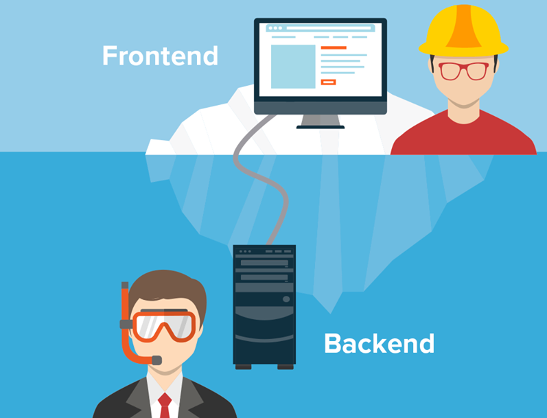
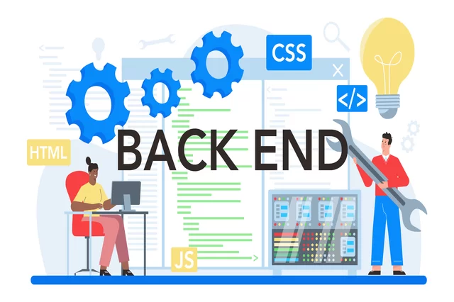

Full-Stack Web Developer, turning ideas into memorable experiences through technique and creativity
I'm passionate about bridging IT Customer Support and Biomedical domains,
bringing technical expertise and strong people skills to every challenge.
I thrive on solving problems, supporting users, and building tech solutions that make a difference in healthcare and beyond.
My journey blends technical growth with a passion for helping others.
Profession: IT Customer Support & Biomedical Specialist Languages: Python, JavaScript, and SQL (learning) Frameworks: Pandas Databases: MySQL, PostgreSQL (learning) Platforms: PyCharm Soft Skills: People management Excellent communication Teamwork Strong stakeholder management
Meus ServiçosFront-end Development:
Builds and manages the server-side logic, databases, and server infrastructure that powers the application.
Designs, implements, and maintains databases for data storage and retrieval.
Builds application programming interfaces (APIs) to allow different software systems to communicate with each other.
Performs testing to ensure the software functions correctly and fixes bugs in both the front-end and back-end.
Works with other developers, designers, and stakeholders to bring a project from concept to a finished product.


A drive to create, innovate, and solve problems through code, like an artist expressing themselves through their medium.
A deep desire to continuously learn new languages, technologies, and algorithms to expand expertise.
A fundamental enjoyment of solving puzzles and breaking down complex challenges into smaller components.

The determination to overcome setbacks, such as bugs or changing requirements, by iterating and finding solutions.
Working on projects they find personally interesting and meaningful, not just for external rewards or deadlines.

The primary reward is the process and outcome itself, rather than salary or promotion.

A desire to mix and match technologies and build things that matter to them.
Operação de luz e painéis LED para conferência empresarial.
"Passion" can be a tool used by employers to demand excessive work and justify poor compensation, creating a sense of coercion.
Acknowledging that professional work must sometimes be done even when passion is absent, and that skill and maturity are crucial alongside passion.
Recognizing that not all programmers are purely driven by passion, and that a supportive environment should accommodate a range of motivations and backgrounds.
Feel free to reach out or explore my repositories in GitHub. I am always open to new collaborations and opportunities!
WhatsApp{kind=link}